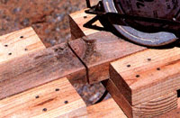
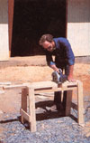
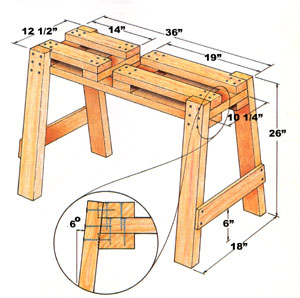

Though the traditional sawhorse is a staple of every construction site, there's always room for improvement . . . and if a wobbly workstand and an unwieldy 2 X 4 ever combined to give you an unkind cut, you might be interested in knocking together our "foolproof" framing horse.
Take a look at the design. The longitudinal trough at the top is sized to accommodate a 2 X 4 of any length, and prevents it from skewing under pressure from the saw. The crosswise channel near the center of the horse lets the blade pass through the work freely, and the flush, 1' X 3' surface serves as a compact bench for hammering or measuring.
Perhaps best of all is the fact that the whole project can be put together from three 8-foot 2 X 4s and a scrap of 1 X 4, at a cost roughly equivalent to that of just one pair of conventional sawhorse brackets. Nearly as tempting, it'll require only a handsaw, a hammer, and a tape measure to build.
The first step is to cut the 2 X 4s, using the illustration as a guide. Pay particular attention to the 10-1/4" crosspieces at the top, as they must be trimmed at a slight angle to butt squarely against the splayed legs. Likewise, when cutting the 1/2" X 3-1/2" corner notches in the 14" and 19" platform boards, use that same angle to assure a good fit. The 36" brace rails should also be notched slightly at their upper corners for the same reason; a 1/4" indentation measured at the surface will suffice.
Next, using 8-penny common nails, fasten the legs to the sides of the brace rails at the notches. There should be 3" of 2 X 4 protruding beyond the upper surface of the rails, and the legs ought to join those bars perpendicularly. Once that's done, you can connect the two halves of the horse by nailing the two 10-1/4" cross braces between the ends, and the 10-3/4" struts near the center ... one 14" from one end, and the other 19" from the other, leaving a 3" space between.
Finish up by laying the platform boards over the cross braces and nailing them down (make sure a sample 2 X 4 slips between them). Drive a few more fasteners through the sides of the legs and into the ends of the short braces and the edges of the corner notches, then lock the whole shebang up tight by cutting your scrap of 1 X 4 into two 16" lengths and tacking each one between the outer edges of each leg set, about 6" up from the bottom. Finally, check the joints and trim any protruding corners with the handsaw to make sure they're flush.
At first, you'll probably be taken with the fact that this cutting bench makes stud trimming a breeze, because the lumber stays where you put it and the blade doesn't tend to bind. But after a while, you'll begin to realize that it works with shorter boards as well, and gives you the option of using a circular saw in the center or a handsaw at the ends. Then too, it could be lengthened if necessary to provide additional support for even longer pieces.
Any way you cut it, it'd be hard to beat this pony for the price ... especially when you consider that one does the work of two.
|
 To view the construction details, click on the Image Gallery, above. The construction details are the third image. |
 |
 |